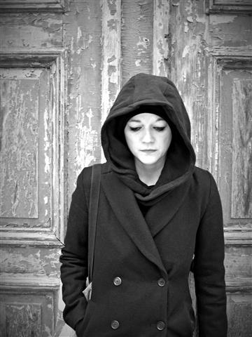

Suhl. Zur 8. Suhler Lesenacht am Freitag, dem 17. Mai 2019, las zum Auftakt der Deutsche Buchpreisträger von 2014 Lutz Seiler in der Stadtbücherei. Nach der Auftaktlesung kamen wie bei der Suhler Lesenacht üblich wieder regionale Autoren zum Zuge, diesmal aus Erfurt, Suhl und Rohr. Die 8. Suhler Lesenacht wurde gemeinsam veranstaltet vom Südthüringer Literaturverein und der Stadt Suhl und maßgeblich gefördert von der Rhön-Rennsteig-Sparkasse.
Die Auftaktlesung in der Stadtbücherei Suhl bestritt Lutz Seiler, der für seinen Roman „Kruso" 2014 den Deutschen Buchpreis erhielt. Er las Auszüge aus diesem Roman sowie aus dem Manuskript für seinen neuen Roman „Meine Wohnung". Hochgespannt verfolgten die etwa 80 Zuschauer die faszinierende Lesung.
Am Eröffnungsort stellte Nancy Hünger aus Erfurt dann ihren neuen Gedichtband „Ein wenig Musik zum Abschied wäre trotzdem nett" vor. In der städtischen Galerie im Atrium des CCS stellte Iris Friebel aus Rohr „Die Erbschaft" und weitere ungewöhnliche Geschichten vor. In der Rennsteig-Galerie brachte Vereinsvorsitzender Holger Uske sein neues Programm „Zwischen Morgen und Abend ein Haus" zur Premiere. Der Eintritt zur Auftaktveranstaltung betrug 5 €, die Nachfolge-Lesungen waren frei.
.jpg)

.jpg)
.jpg)